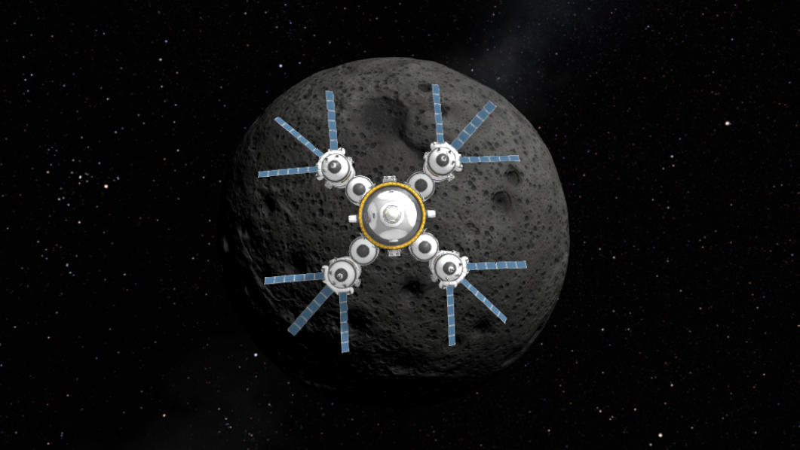
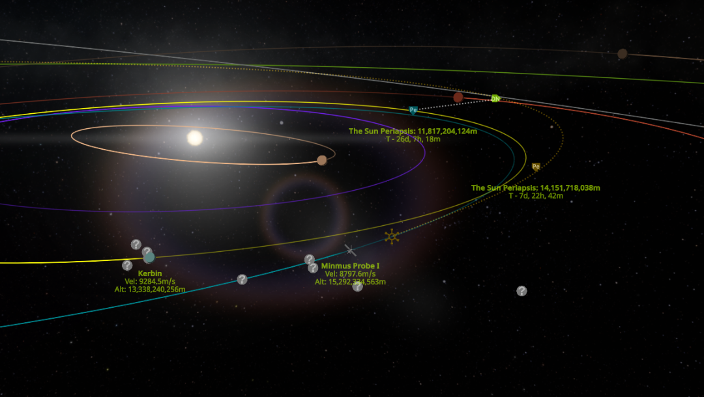

For months, the KSP gaming community's website has been suffering. After the internal lay-offs and problems caused by the release of KSP 2, the online merch store went offline, and the main website now only has one page. The main reason the website is still even online is likely only for the community forums. Welcome to the solution.
About Kerbal Space Program
KSP, a game developed by Squad in 2011, is a physics-acurate rocket sandbox. You play from the perspective of a space agency run by a fictional alien race know as Kerbals, who live in a solar system similar to ours. Gameplay includes designing spacecraft using a complex vehicle editor, launching rockets and or aircraft, and exploring outer space!

Source: Image Taken by Creator of Website, of video game Kerbal Space Program, created by Squad
While some aspects of this game are made to be funny, you should not underestimate it. Despite being from the perspective of little green men, the game features realistic physics, and teaches orbital mehanics, to provide a fun, yet educational experience!

Source: Image Taken by Creator of Website, of video game Kerbal Space Program, created by Squad
Where to Buy KSP:
| Steam | Gog | Epic Games | Playstation | Xbox |
Note: You Cannot Install Mods on Console Editions (Playstation/Xbox).